Shapes¶
All shapes inherit from VObject and share its full set of animation methods.
Ellipse¶
{kind=link}
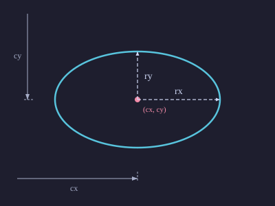
Example: Ellipse
v = VectorMathAnim('_ref_out', verbose=args.verbose)
v.set_background()
e = Ellipse(rx=200, ry=100, fill='#58C4DD', fill_opacity=0.6, stroke='#58C4DD')
v.add(e)
if args.for_docs:
- class Ellipse(rx=120, ry=60, cx=960, cy=540, **styling)¶
Ellipse centred at
(cx, cy)with radiirxandry.- Parameters:
rx (float) – Horizontal radius.
ry (float) – Vertical radius.
cx (float) – Centre x.
cy (float) – Centre y.
Geometry methods
- get_area(time=0)¶
Return the area π·rx·ry.
- get_perimeter(time=0)¶
Approximate perimeter (Ramanujan’s formula).
- eccentricity(time=0)¶
Return the eccentricity e = √(1 - (min/max)²).
- get_foci(time=0)¶
Return a list of two
(x, y)foci points.
- point_at_angle(degrees, time=0)¶
Return
(x, y)on the ellipse boundary at the given angle.
- get_point_at_parameter(t, time=0)¶
Return
(x, y)at parametric value t ∈ [0, 1] (full revolution).
- contains_point(px, py, time=0)¶
Return
Trueif the point lies inside the ellipse.
Mutation methods
- set_center(cx, cy, start=0, end=None, easing=smooth)¶
Animate the centre to a new position.
- set_rx(value, start=0, end=None, easing=smooth)¶
- set_ry(value, start=0, end=None, easing=smooth)¶
Animate radius changes.
- get_rx(time=0)¶
- get_ry(time=0)¶
Return current radii values.
Tangent / Normal
- tangent_at_angle(angle_deg, length=200, time=0, **kwargs)¶
Return a
Linetangent to the ellipse at the given angle.
- normal_at_angle(angle_deg, length=200, time=0, **kwargs)¶
Return a
Linenormal to the ellipse at the given angle.
- get_tangent_line(angle_deg, length=100, time=0, **kwargs)¶
Alias for
tangent_at_angle().
Circle¶
{kind=link}
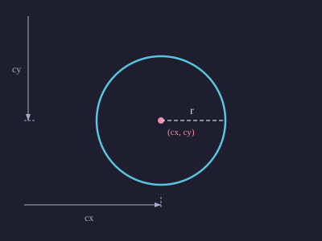
Example: Circle
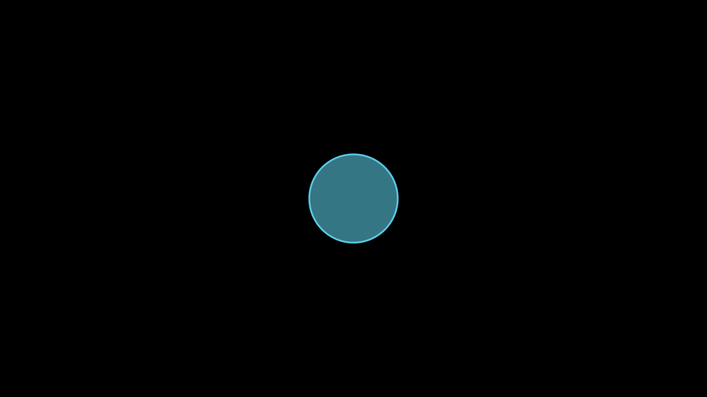
v = VectorMathAnim('_ref_out', verbose=args.verbose)
v.set_background()
c = Circle(r=120, fill='#58C4DD', fill_opacity=0.6, stroke='#58C4DD')
v.add(c)
if args.for_docs:
- class Circle(r=120, cx=960, cy=540, **styling)¶
Bases:
EllipseCircle (Ellipse with
rx == ry).- Parameters:
r (float) – Radius.
cx (float) – Centre x.
cy (float) – Centre y.
Geometry
- point_at_angle(degrees, time=0)¶
Return
(x, y)on the circumference at the given angle.
- get_area(time=0)¶
Return πr².
- get_perimeter(time=0)¶
Return 2πr.
- get_radius(time=0)¶
- set_radius(value, start=0, end=None, easing=smooth)¶
Get / animate the radius.
- contains_point(px, py, time=0)¶
Return
Trueif the point lies inside the circle.
- sector_area(start_angle, end_angle, time=0)¶
Area of the sector between two angles (degrees).
- arc_length(start_angle, end_angle, time=0)¶
Arc length between two angles (degrees).
- segment_area(start_angle, end_angle, time=0)¶
Area of the circular segment between two angles.
- chord_length(distance, time=0)¶
Chord length at given distance from center.
- power_of_point(px, py, time=0)¶
Return the power of a point with respect to the circle.
Construction
- inscribed_polygon(n, angle=0, time=0, **kwargs)¶
Return a
RegularPolygoninscribed in this circle.
- circumscribed_polygon(n, angle=0, time=0, **kwargs)¶
Return a
RegularPolygoncircumscribed around this circle.
- get_annulus(inner_ratio=0.5, time=0, **kwargs)¶
Return an
Annuluswith inner radius as a fraction of r.
- annular_sector(inner_ratio=0.5, start_angle=0, end_angle=360, **kwargs)¶
Return an
AnnularSectorbased on this circle.
Tangent lines
- tangent_line(angle_degrees, length=100, time=0, **kwargs)¶
Return a
Linetangent at the given angle on the circle.
- tangent_at_point(px, py, length=200, time=0, **kwargs)¶
Return a tangent line at the closest point on the circle.
- tangent_line_from_point(px, py, time=0, length=200, **kwargs)¶
Return tangent lines from an external point.
- get_tangent_lines(px, py, time=0, length=200, **kwargs)¶
Return both tangent lines from external point as a list.
- tangent_points(px, py, time=0)¶
Return the two tangent contact points from an external point.
Intersections
- intersect_circle(other, time=0)¶
Return list of
(x, y)intersection points with another circle.
Class methods
- classmethod from_diameter(p1, p2, **kwargs)¶
Create a circle from two diameter endpoints.
- classmethod from_center_and_point(center, point, **kwargs)¶
Create from center and a point on the circumference.
- classmethod from_bounding_box(vobject, padding=0, time=0, **kwargs)¶
Create the smallest enclosing circle for a VObject’s bounding box.
- classmethod from_three_points(p1, p2, p3, **kwargs)¶
Create the unique circle through three non-collinear points.
Example: Circle
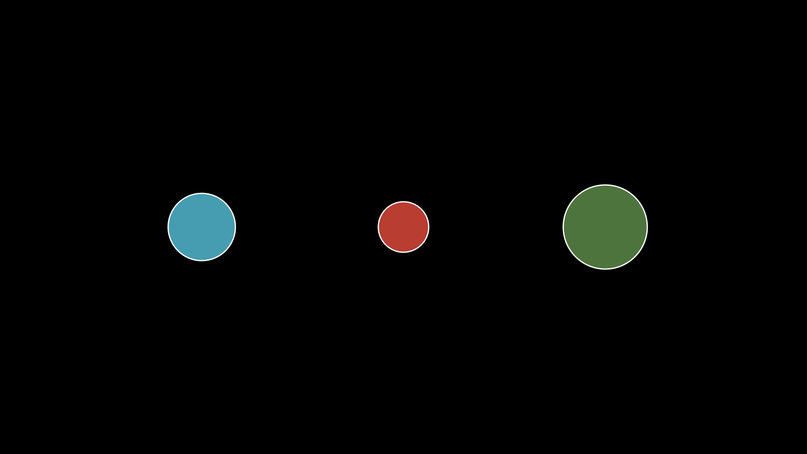
Circle with grow_from_center animation.
v = VectorMathAnim('_ref_out', verbose=args.verbose)
v.set_background()
c1 = Circle(r=80, cx=480, cy=540, fill='#58C4DD', fill_opacity=0.8, stroke_width=3)
c2 = Circle(r=60, cx=960, cy=540, fill='#E74C3C', fill_opacity=0.8, stroke_width=3)
c3 = Circle(r=100, cx=1440, cy=540, fill='#83C167', fill_opacity=0.6, stroke_width=3)
v.add(c1, c2, c3)
if args.for_docs:
v.write_frame(filename='docs/source/_static/videos/circle.svg')
if not args.for_docs:
Dot¶
Example: Dot & AnnotationDot
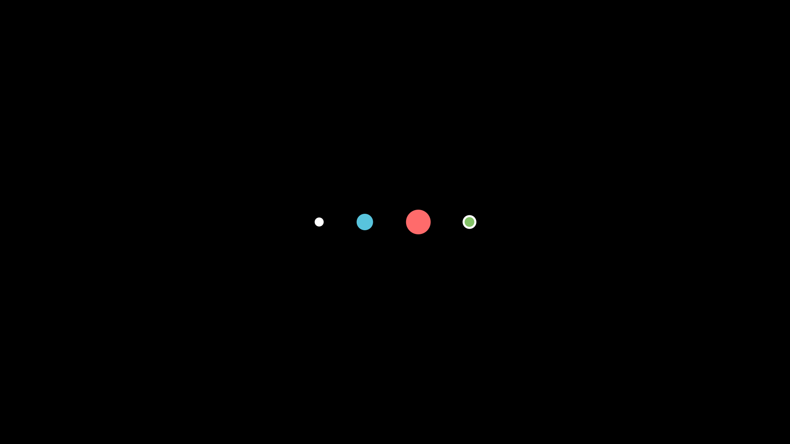
v = VectorMathAnim('_ref_out', verbose=args.verbose)
v.set_background()
dots = VCollection(
Dot(fill='#FFFFFF'),
Dot(r=20, fill='#58C4DD'),
Dot(r=30, fill='#FF6B6B'),
AnnotationDot(fill='#83C167'),
)
dots.arrange(direction='right', buff=80)
dots.center_to_pos()
v.add(dots)
if args.for_docs:
AnnotationDot¶
Square¶
Example: Square
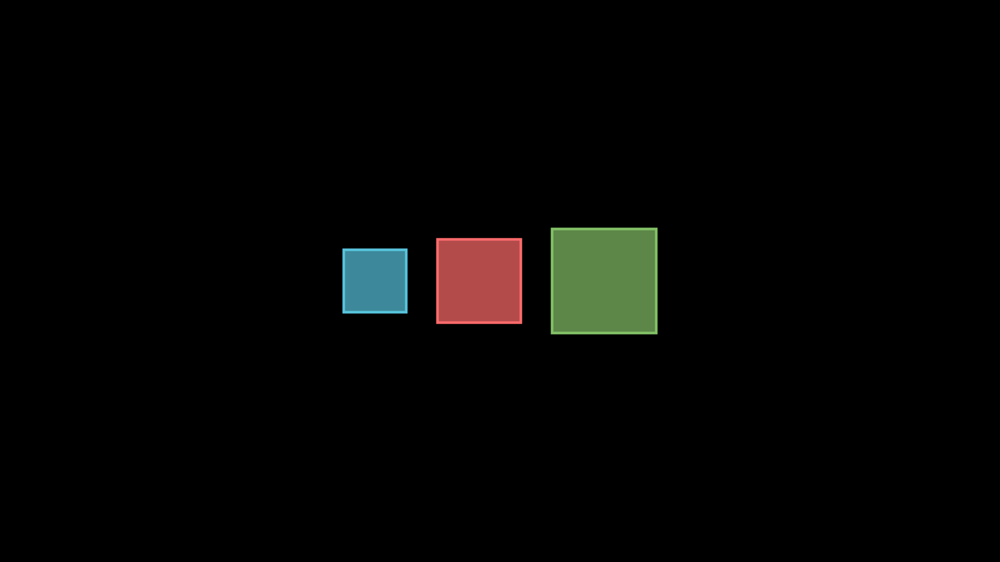
v = VectorMathAnim('_ref_out', verbose=args.verbose)
v.set_background()
squares = VCollection(
Square(side=120, fill='#58C4DD', fill_opacity=0.7, stroke='#58C4DD'),
Square(side=160, fill='#FF6B6B', fill_opacity=0.7, stroke='#FF6B6B'),
Square(side=200, fill='#83C167', fill_opacity=0.7, stroke='#83C167'),
)
squares.arrange(direction='right', buff=60)
squares.center_to_pos()
v.add(squares)
if args.for_docs:
Rectangle¶
{kind=link}
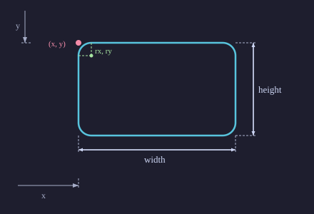
Example: Rectangle
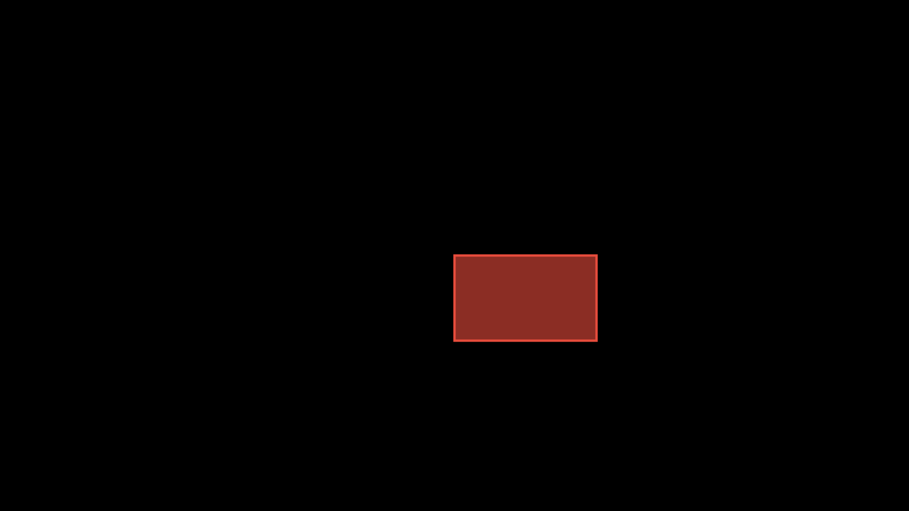
v = VectorMathAnim('_ref_out', verbose=args.verbose)
v.set_background()
r = Rectangle(300, 180, fill='#E74C3C', fill_opacity=0.6, stroke='#E74C3C')
v.add(r)
if args.for_docs:
- class Rectangle(width, height, x=960, y=540, rx=0, ry=0, **styling)¶
Rectangle positioned at
(x, y)(top-left corner).- Parameters:
width (float) – Width.
height (float) – Height.
x (float) – Top-left x.
y (float) – Top-left y.
rx (float) – Corner radius x.
ry (float) – Corner radius y.
Geometry
- get_size(time=0)¶
Return
(width, height)tuple.
- is_square(time=0, tol=1e-3)¶
Return
Trueif width ≈ height.
- aspect_ratio(time=0)¶
Return width / height.
- contains_point(px, py, time=0)¶
Return
Trueif the point lies inside the rectangle.
- sample_border(t, time=0)¶
Return
(x, y)at parameter t ∈ [0, 1] around the border.
Mutation
- set_size(width, height, start=0, end=None, easing=smooth)¶
Animate to new dimensions.
- grow_width(amount, start=0, end=1, easing=smooth)¶
- grow_height(amount, start=0, end=1, easing=smooth)¶
Add amount to width or height over the interval.
- expand(amount=20, start=0, end=1, easing=smooth)¶
Expand width and height by amount simultaneously.
Subdivision
- split(direction='horizontal', count=2, time=0, **kwargs)¶
Split into count sub-rectangles. Direction is
'horizontal'or'vertical'.
- split_horizontal(n=2, time=0, **kwargs)¶
- quadrants(time=0, **kwargs)¶
Split into 4 equal sub-rectangles.
- subdivide(rows=2, cols=2, time=0, **kwargs)¶
Split into a grid of rows × cols sub-rectangles.
Construction
- inset(amount, time=0, **kwargs)¶
Return a smaller rectangle inset by amount on all sides.
- round_corners(radius=10, time=0, **kwargs)¶
Return a
RoundedRectanglecopy with rounded corners.
Class methods
- classmethod square(side, **kwargs)¶
Create a square rectangle.
- classmethod from_center(cx, cy, width, height, **kwargs)¶
Create a rectangle centered at
(cx, cy).
- classmethod from_corners(x1, y1, x2, y2, **kwargs)¶
Create from opposite corner coordinates.
- classmethod from_bounding_box(vobject, padding=0, time=0, **kwargs)¶
Create the bounding rectangle for a VObject.
- classmethod from_two_objects(obj_a, obj_b, padding=0, **kwargs)¶
Create the bounding rectangle that encloses two VObjects.
Example — animated subdivision
r = Rectangle(400, 300, x=780, y=390, fill='#2C3E50', stroke='#ECF0F1') r.fadein(start=0, end=1) # Split into a 3×3 grid cells = r.subdivide(rows=3, cols=3) for i, cell in enumerate(cells): cell.fadein(start=1 + i * 0.2, end=1.5 + i * 0.2) v.add(cell)
RoundedRectangle¶
Example: RoundedRectangle
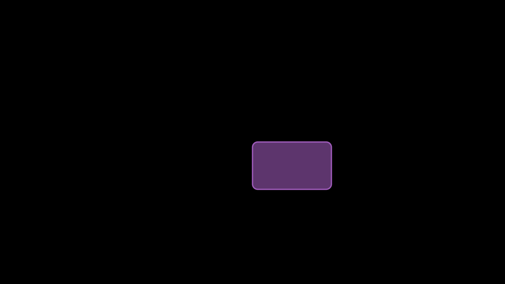
v = VectorMathAnim('_ref_out', verbose=args.verbose)
v.set_background()
r = RoundedRectangle(300, 180, corner_radius=20, fill='#9B59B6', fill_opacity=0.6, stroke='#9B59B6')
v.add(r)
if args.for_docs:
Line¶
{kind=link}
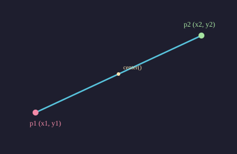
Example: Line
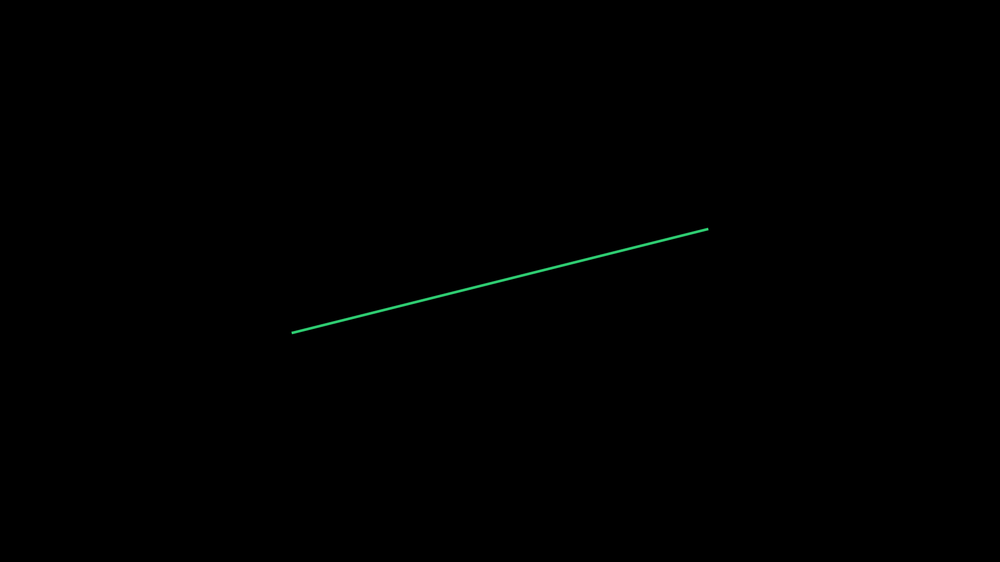
v = VectorMathAnim('_ref_out', verbose=args.verbose)
v.set_background()
l = Line(x1=560, y1=640, x2=1360, y2=440, stroke='#2ECC71', stroke_width=5)
v.add(l)
if args.for_docs:
- class Line(x1=0, y1=0, x2=100, y2=100, **styling)¶
Line segment from
(x1, y1)to(x2, y2).- Parameters:
x1 (float) – Start x.
y1 (float) – Start y.
x2 (float) – End x.
y2 (float) – End y.
Query methods
- get_start(time=0)¶
- get_end(time=0)¶
Return
(x, y)of start / end points.
- get_midpoint(time=0)¶
Return
(x, y)midpoint.
- get_length(time=0)¶
Return the length of the line segment.
- get_angle(time=0)¶
Return the angle in degrees.
- get_slope(time=0)¶
Return the slope (dy/dx), or
float('inf')for vertical lines.
- get_direction(time=0)¶
Return
(dx, dy)unit direction vector.
- get_vector(time=0)¶
Return
(dx, dy)(not normalized).
- get_normal(time=0)¶
Return
(-dy, dx)unit normal vector.
- lerp(t, time=0)¶
Return
(x, y)at parameter t ∈ [0, 1] along the line.
Boolean checks
- is_horizontal(time=0, tol=1e-3)¶
- is_vertical(time=0, tol=1e-3)¶
- is_parallel(other, time=0, tol=1e-6)¶
- is_perpendicular(other, time=0, tol=1e-6)¶
- contains_point(px, py, time=0, tol=2)¶
Mutation
- set_start(point, start=0, end=None, easing=smooth)¶
- set_end(point, start=0, end=None, easing=smooth)¶
Animate start or end point.
- set_points(p1, p2, start=0)¶
Set both points at once (instant).
- set_length(length, start=0, end=None, easing=smooth)¶
Animate to a new length, keeping the midpoint fixed.
- set_angle(angle_deg, about='midpoint', start=0, end=None, easing=smooth)¶
Animate to a new angle.
aboutcan be'midpoint','start', or'end'.
- put_start_and_end_on(p1, p2, start=0, end=None, easing=smooth)¶
Animate both endpoints simultaneously.
- extend_to(length, anchor='start', start=0, end=None, easing=smooth)¶
Extend to a given total length from an anchor.
- extend(factor=1.5, start=0, end=None, easing=smooth)¶
Multiply the length by factor.
- scale_length(factor=2.0, time=0)¶
Instantly scale the length by factor.
- add_tip(end=True, start=False, tip_length=None, tip_width=None)¶
Add arrowhead tips to one or both ends.
Construction
- divide(n=2, time=0)¶
Return n+1 evenly spaced points along the line.
- perpendicular(at_proportion=0.5, length=None, time=0, **kwargs)¶
Return a
Lineperpendicular at the given proportion.
- bisector(time=0, length=None, **kwargs)¶
Return the perpendicular bisector line.
Intersections and projections
- intersect_line(other, time=0)¶
Return
(x, y)intersection with another infinite line, orNone.
- intersect_segment(other, time=0)¶
Return
(x, y)only if both segments actually overlap.
- intersection(other, time=0)¶
Alias for
intersect_line().
- project_point(px, py, time=0)¶
Orthogonal projection of a point onto the infinite line.
- closest_point_on_segment(px, py, time=0)¶
Closest point clamped to the segment.
- distance_to_point(px, py, time=0)¶
Shortest distance from a point to the segment.
- angle_to(other, time=0)¶
Angle between this line and another (degrees).
- project_onto(other, time=0, **kwargs)¶
Return the projection of this segment onto another line.
Class methods
- classmethod between(p1, p2, **kwargs)¶
Create a line between two
(x, y)points.
- classmethod vertical(x, y1, y2, **kwargs)¶
- classmethod horizontal(y, x1, x2, **kwargs)¶
Create vertical or horizontal lines.
- classmethod from_direction(origin, direction, length=100, **kwargs)¶
Create from an origin point and direction tuple.
- classmethod from_angle(origin, angle_deg, length=100, **kwargs)¶
Create from an origin point and angle.
- classmethod from_slope_point(slope, point, length=200, **kwargs)¶
Create from a slope and a point on the line.
- classmethod from_objects(obj_a, obj_b, buff=0, **kwargs)¶
Create a line connecting two VObjects’ centres.
Example — line geometry
l1 = Line(200, 300, 800, 600, stroke='#3498DB') l2 = Line(200, 600, 800, 200, stroke='#E74C3C') # Find intersection pt = l1.intersect_line(l2) if pt: dot = Dot(cx=pt[0], cy=pt[1]) dot.fadein(start=1, end=2) # Perpendicular bisector bisector = l1.bisector(length=300, stroke='#2ECC71')
DashedLine¶
Example: DashedLine
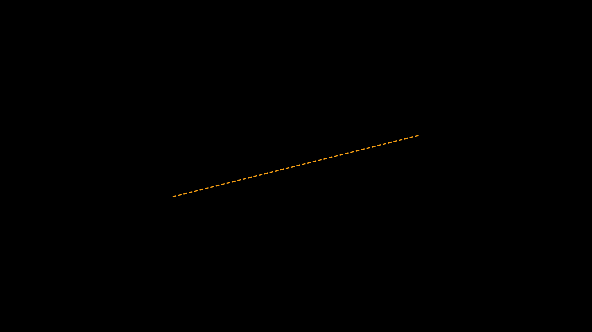
v = VectorMathAnim('_ref_out', verbose=args.verbose)
v.set_background()
l = DashedLine(x1=560, y1=640, x2=1360, y2=440, dash='12,6', stroke='#F39C12', stroke_width=4)
v.add(l)
if args.for_docs:
Polygon¶
Example: Polygon
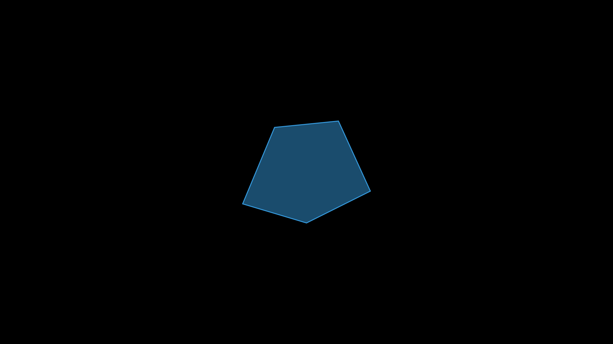
v = VectorMathAnim('_ref_out', verbose=args.verbose)
v.set_background()
pts = [(760, 640), (860, 400), (1060, 380), (1160, 600), (960, 700)]
p = Polygon(*pts, fill='#3498DB', fill_opacity=0.5, stroke='#3498DB', stroke_width=3)
v.add(p)
if args.for_docs:
- class Polygon(*vertices, closed=True, **styling)¶
Closed polygon from
(x, y)vertex tuples.- Parameters:
vertices – Sequence of
(x, y)tuples.closed (bool) –
Falsefor an open polyline.
Geometry
- get_vertices(time=0)¶
Return list of
(x, y)tuples.
- get_center(time=0)¶
Return the bounding-box center.
- centroid(time=0)¶
Return the geometric centroid (average of vertices).
- area(time=0)¶
Return the polygon area (shoelace formula, always positive).
- signed_area(time=0)¶
Return signed area (positive for counter-clockwise).
- perimeter(time=0)¶
Return the polygon perimeter.
- edge_lengths(time=0)¶
Return a list of edge lengths.
- contains_point(px, py, time=0)¶
Return
Trueif the point lies inside (winding number algorithm).
- winding_number(px, py, time=0)¶
Return the winding number of a point with respect to the polygon.
- is_convex(time=0)¶
Return
Trueif the polygon is convex.
- is_clockwise(time=0)¶
Return
Trueif vertices are ordered clockwise.
- is_regular(tol=1e-3, time=0)¶
Return
Trueif all edges and angles are equal.
- interior_angles(time=0)¶
Return a list of interior angles in degrees.
Edges and diagonals
- get_edges(time=0)¶
Return a list of
((x1,y1), (x2,y2))edge tuples.
- get_edge_midpoints(time=0)¶
Return list of
(x, y)midpoints of each edge.
- get_longest_edge(time=0)¶
- get_shortest_edge(time=0)¶
Return
((x1,y1), (x2,y2))for the longest / shortest edge.
Mutation
- move_vertex(index, x, y, start=0, end=None, easing=smooth)¶
Animate a single vertex to a new position.
- translate(dx, dy)¶
Translate all vertices by
(dx, dy)instantly.
- scale_vertices(factor, time=0)¶
Scale all vertices relative to the centroid.
- rotate_vertices(angle_deg, cx=None, cy=None, time=0)¶
Rotate all vertices around a point (defaults to centroid).
- mirror_x(cx=None, time=0)¶
- mirror_y(cy=None, time=0)¶
Mirror vertices across a vertical / horizontal axis.
- apply_pointwise(func, time=0)¶
Apply a function
f(x, y) → (x', y')to each vertex.
Derived shapes
- inset(distance, time=0, **kwargs)¶
Return a new polygon inset by distance.
- get_subcurve(a, b, time=0, **kwargs)¶
Extract the portion of the polyline between parameters a and b (floats in
[0, 1]representing fraction of total path length). Returns a newLinesobject.
- subdivide_edges(iterations=1, time=0, **kwargs)¶
Subdivide each edge into two, refining the polygon.
- smooth_corners(radius=10, time=0, **kwargs)¶
Return a new polygon with rounded corners.
- label_vertices(labels=None, offset=20, font_size=24, time=0, **kwargs)¶
Return
Textlabels positioned near each vertex.
Class methods
- classmethod from_points(points, **kwargs)¶
Create from a list of
(x, y)points.
- classmethod convex_hull(*points, **kwargs)¶
Create the convex hull of a set of points.
- classmethod from_svg_path(path_d, **kwargs)¶
Create from an SVG path
dstring.
Example: Polygon gallery
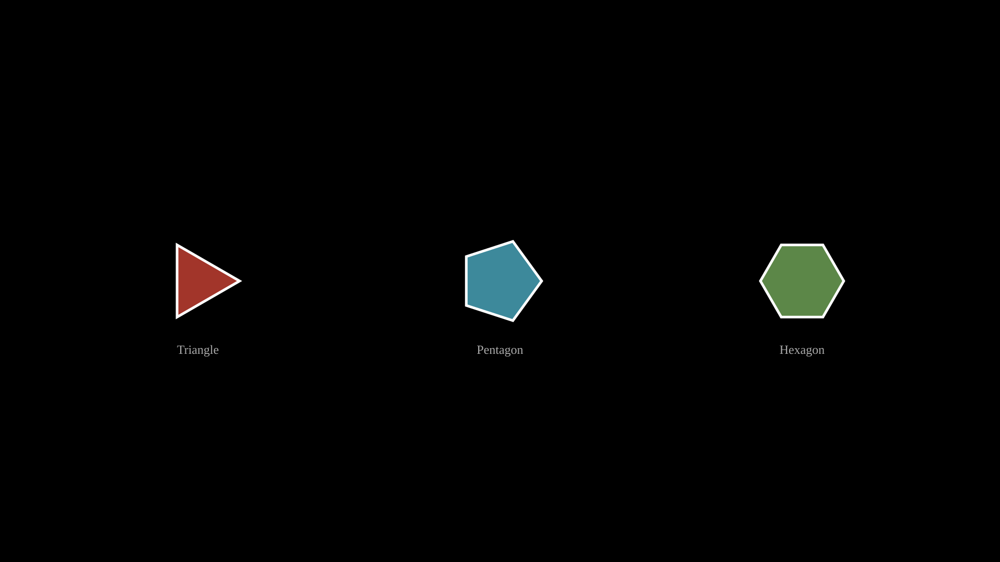
Regular polygons: triangle, pentagon, hexagon.
v = VectorMathAnim('_ref_out', verbose=args.verbose)
v.set_background()
tri = RegularPolygon(3, radius=80, cx=380, cy=540, fill='#E74C3C', fill_opacity=0.7)
pent = RegularPolygon(5, radius=80, cx=960, cy=540, fill='#58C4DD', fill_opacity=0.7)
hexa = RegularPolygon(6, radius=80, cx=1540, cy=540, fill='#83C167', fill_opacity=0.7)
l1 = Text('Triangle', x=380, y=680, font_size=24, fill='#aaa', text_anchor='middle')
l2 = Text('Pentagon', x=960, y=680, font_size=24, fill='#aaa', text_anchor='middle')
l3 = Text('Hexagon', x=1540, y=680, font_size=24, fill='#aaa', text_anchor='middle')
v.add(tri, pent, hexa, l1, l2, l3)
if args.for_docs:
v.write_frame(filename='docs/source/_static/videos/polygon.svg')
if not args.for_docs:
Lines¶
Example: Lines (open polyline)
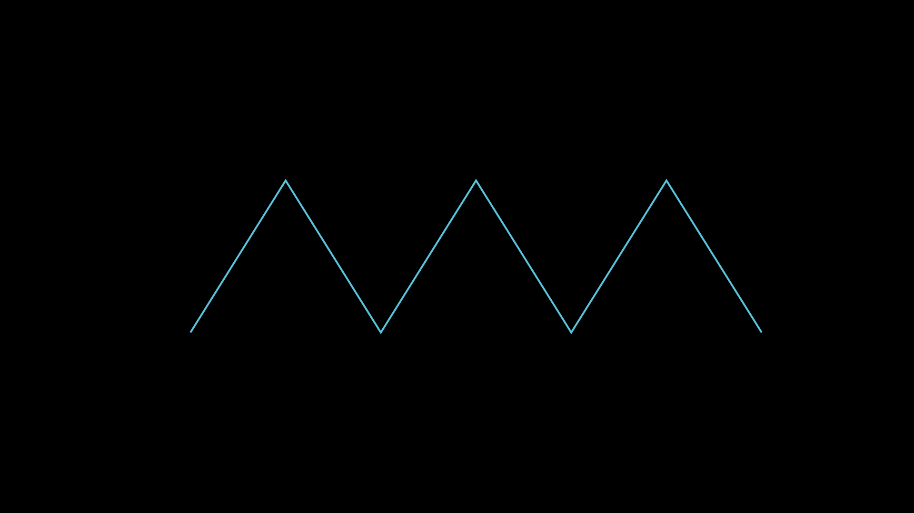
v = VectorMathAnim('_ref_out', verbose=args.verbose)
v.set_background()
zigzag = Lines(
(400, 700), (600, 380), (800, 700), (1000, 380), (1200, 700), (1400, 380), (1600, 700),
stroke='#58C4DD', stroke_width=4, fill_opacity=0,
)
v.add(zigzag)
if args.for_docs:
RegularPolygon¶
Example: RegularPolygon
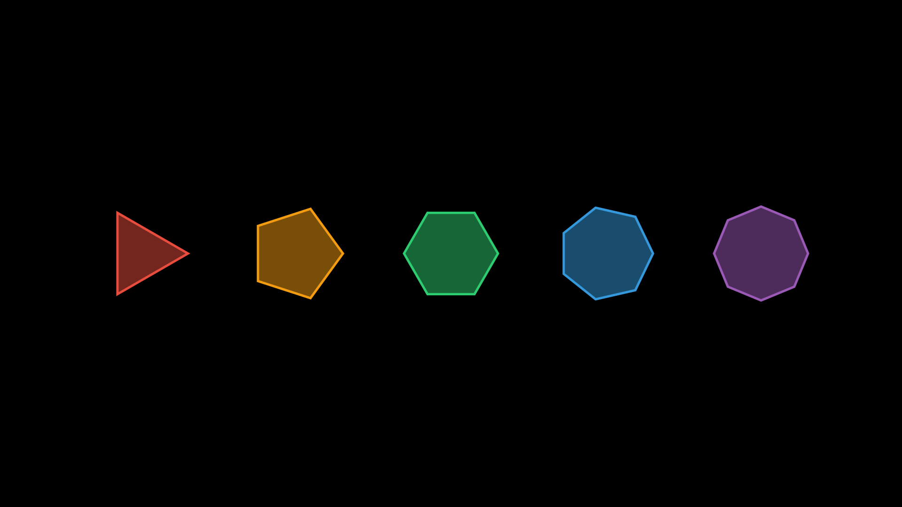
v = VectorMathAnim('_ref_out', verbose=args.verbose)
v.set_background()
colors = ['#E74C3C', '#F39C12', '#2ECC71', '#3498DB', '#9B59B6']
for i, (n, color) in enumerate(zip([3, 5, 6, 7, 8], colors)):
cx = 300 + i * 330
p = RegularPolygon(n, radius=100, cx=cx, cy=540, fill=color, fill_opacity=0.5, stroke=color)
v.add(p)
if args.for_docs:
{kind=link}
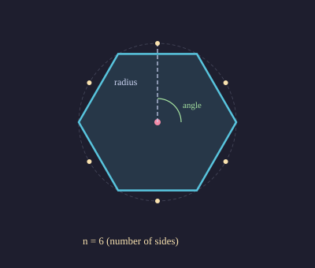
- class RegularPolygon(n, radius=120, cx=960, cy=540, angle=0, **styling)¶
Bases:
PolygonN-sided regular polygon inscribed in a circle of given radius.
- Parameters:
n (int) – Number of sides.
radius (float) – Circumscribed radius.
angle (float) – Starting rotation angle in degrees.
- get_side_length(time=0)¶
Return the side length.
- get_inradius(time=0)¶
- get_apothem(time=0)¶
Return the inradius (distance from center to edge midpoint). Both are equivalent.
- get_circumradius(time=0)¶
Return the circumscribed radius.
EquilateralTriangle¶
- class EquilateralTriangle(side_length, angle=0, cx=960, cy=540, **styling)¶
Bases:
RegularPolygon(n=3).Triangleis an alias.
Star¶
Example: Star
v = VectorMathAnim('_ref_out', verbose=args.verbose)
v.set_background()
s = Star(5, outer_radius=140, inner_radius=60, cx=960, cy=540,
fill='#F1C40F', fill_opacity=0.7, stroke='#F1C40F')
v.add(s)
if args.for_docs:
{kind=link}
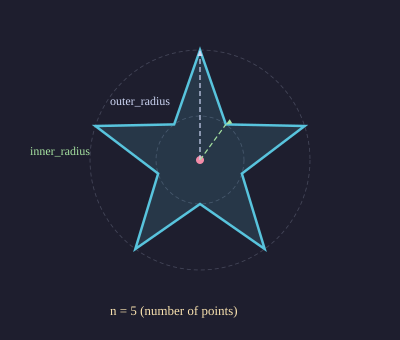
- class Star(n=5, outer_radius=120, inner_radius=None, cx=960, cy=540, angle=90, **styling)¶
Bases:
PolygonN-pointed star.
- Parameters:
n (int) – Number of points.
outer_radius (float) – Outer radius.
inner_radius (float) – Inner radius (defaults to
outer_radius * 0.4, i.e.48).
- get_outer_radius()¶
- get_inner_radius()¶
Return the stored radius values.
Example: Star
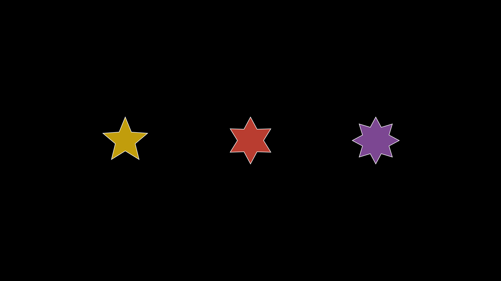
Stars with varying point counts.
v = VectorMathAnim('_ref_out', verbose=args.verbose)
v.set_background()
s5 = Star(5, outer_radius=90, inner_radius=40, cx=480, cy=540,
fill='#F1C40F', fill_opacity=0.8, stroke_width=2)
s6 = Star(6, outer_radius=90, inner_radius=50, cx=960, cy=540,
fill='#E74C3C', fill_opacity=0.8, stroke_width=2)
s8 = Star(8, outer_radius=90, inner_radius=55, cx=1440, cy=540,
fill='#9B59B6', fill_opacity=0.8, stroke_width=2)
v.add(s5, s6, s8)
if args.for_docs:
v.write_frame(filename='docs/source/_static/videos/star.svg')
if not args.for_docs:
Arc¶
Example: Arc
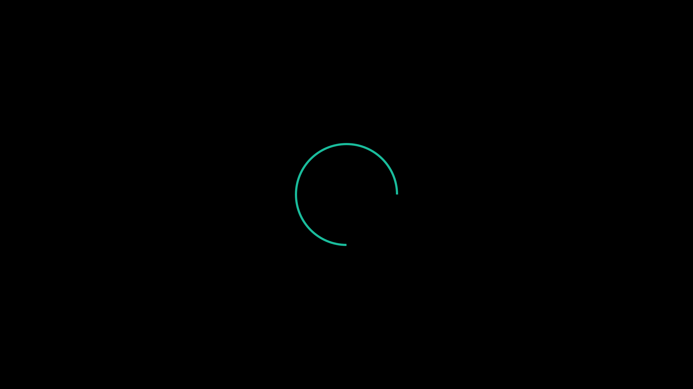
v = VectorMathAnim('_ref_out', verbose=args.verbose)
v.set_background()
a = Arc(r=140, start_angle=0, end_angle=270, cx=960, cy=540,
stroke='#1ABC9C', stroke_width=6, fill_opacity=0)
v.add(a)
if args.for_docs:
{kind=link}
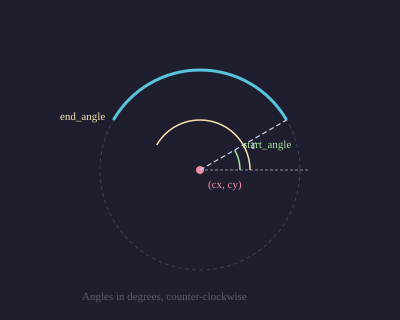
- class Arc(cx=960, cy=540, r=120, start_angle=0, end_angle=90, **styling)¶
SVG arc from
start_angletoend_angle(in degrees, counterclockwise).- Parameters:
cx (float) – Centre x.
cy (float) – Centre y.
r (float) – Radius.
start_angle (float) – Start angle in degrees.
end_angle (float) – End angle in degrees.
Methods
- get_start_point(time=0)¶
- get_end_point(time=0)¶
Return
(x, y)at the start / end of the arc.
- get_arc_length(time=0)¶
Return the arc length.
- point_at_angle(angle_deg, time=0)¶
Return
(x, y)at a specific angle on the arc’s circle.
- set_angles(start_angle, end_angle, start=0, end_time=None, easing=smooth)¶
Animate the arc angles.
Example: Arc & Wedge
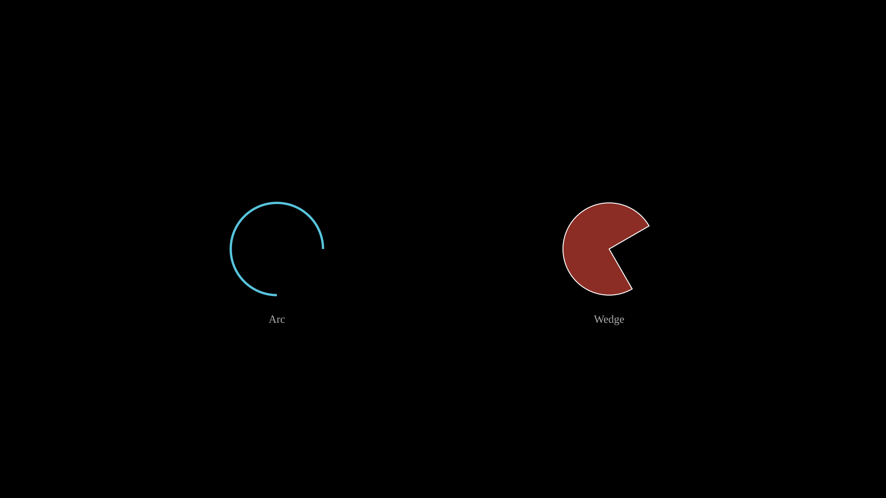
Arc sweeps and pie-wedge shapes.
v = VectorMathAnim('_ref_out', verbose=args.verbose)
v.set_background()
a = Arc(r=100, start_angle=0, end_angle=270, cx=600, cy=540,
stroke='#58C4DD', stroke_width=5, fill_opacity=0)
w = Wedge(r=100, start_angle=30, end_angle=300, cx=1320, cy=540,
fill='#E74C3C', fill_opacity=0.6, stroke_width=2)
l1 = Text('Arc', x=600, y=700, font_size=24, fill='#aaa', text_anchor='middle')
l2 = Text('Wedge', x=1320, y=700, font_size=24, fill='#aaa', text_anchor='middle')
v.add(a, w, l1, l2)
if args.for_docs:
v.write_frame(filename='docs/source/_static/videos/arc.svg')
if not args.for_docs:
Wedge / Sector¶
{kind=link}
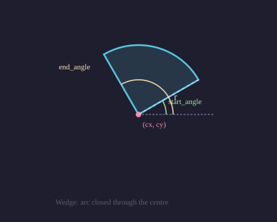
Example: Wedge
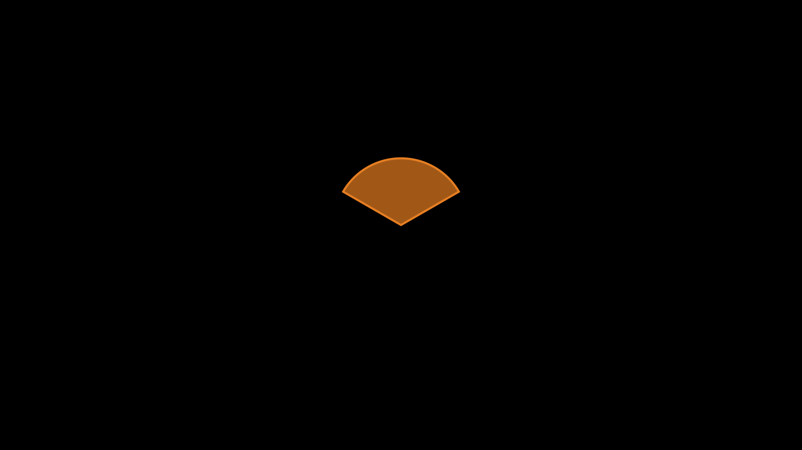
v = VectorMathAnim('_ref_out', verbose=args.verbose)
v.set_background()
w = Wedge(r=160, start_angle=30, end_angle=150, cx=960, cy=540,
fill='#E67E22', fill_opacity=0.7, stroke='#E67E22')
v.add(w)
if args.for_docs:
Annulus¶
{kind=link}
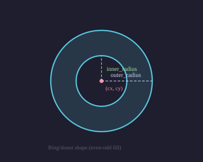
Example: Annulus
v = VectorMathAnim('_ref_out', verbose=args.verbose)
v.set_background()
a = Annulus(inner_radius=80, outer_radius=160, cx=960, cy=540,
fill='#E74C3C', fill_opacity=0.6, stroke='#E74C3C')
v.add(a)
if args.for_docs:
- class Annulus(inner_radius=60, outer_radius=120, cx=960, cy=540, **styling)¶
Ring (donut) shape.
- Parameters:
inner_radius (float) – Inner radius.
outer_radius (float) – Outer radius.
- get_inner_radius(time=0)¶
- get_outer_radius(time=0)¶
- set_inner_radius(value, start=0, end=None, easing=smooth)¶
- set_outer_radius(value, start=0, end=None, easing=smooth)¶
- set_radii(inner=None, outer=None, start=0, end=None, easing=smooth)¶
Get, set, or animate both radii at once.
- get_area(time=0)¶
Return π(R² - r²).
AnnularSector¶
- class AnnularSector(inner_radius=60, outer_radius=120, cx=960, cy=540, start_angle=0, end_angle=90, **styling)¶
Bases:
ArcSector of an annulus (ring wedge). Like a Wedge but with an inner radius cut out.
- Parameters:
inner_radius (float) – Inner radius.
outer_radius (float) – Outer radius.
- set_inner_radius(value, start=0, end=None, easing=smooth)¶
- get_area(time=0)¶
ArcBetweenPoints¶
ArcPolygon¶
- class ArcPolygon(*vertices, arc_angles=30, **styling)¶
Polygon whose edges are arcs instead of straight lines.
- Parameters:
vertices – At least 3
(x, y)tuples.arc_angles – Bulge angle for each edge (scalar for all, or list per edge). Positive = left of travel, negative = right, 0 = straight.
Example
# Triangle with curved edges ap = ArcPolygon((860, 400), (1060, 400), (960, 250), arc_angles=30, fill='#3498DB', fill_opacity=0.3)
Angle¶
{kind=link}
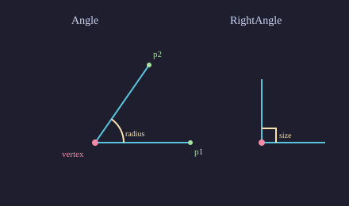
Example: Angle

v = VectorMathAnim('_ref_out', verbose=args.verbose)
v.set_background()
vertex = (960, 540)
p1 = (1260, 540)
p2 = (1160, 340)
l1 = Line(x1=vertex[0], y1=vertex[1], x2=p1[0], y2=p1[1], stroke='#aaa', stroke_width=3)
l2 = Line(x1=vertex[0], y1=vertex[1], x2=p2[0], y2=p2[1], stroke='#aaa', stroke_width=3)
angle = Angle(vertex, p1, p2, radius=60, stroke='#58C4DD', stroke_width=3)
v.add(l1, l2, angle)
if args.for_docs:
- class Angle(vertex, p1, p2, radius=36, label=None, label_radius=None, label_font_size=36, **styling)¶
Bases:
VCollectionAngle indicator arc between two points meeting at a vertex. All three position parameters accept
(x, y)tuples orCoorobjects for time-varying angles.- Parameters:
vertex – Vertex point.
p1 – First ray endpoint.
p2 – Second ray endpoint.
radius (float) – Arc radius.
label (str) – Optional text label displayed inside the arc (e.g.
'θ').label_radius (float) – Distance from vertex to label (defaults to
radius).label_font_size (float) – Font size for the label.
RightAngle¶
- class RightAngle(vertex, p1, p2, size=18, **styling)¶
Right angle square indicator.
Cross¶
Example: Cross
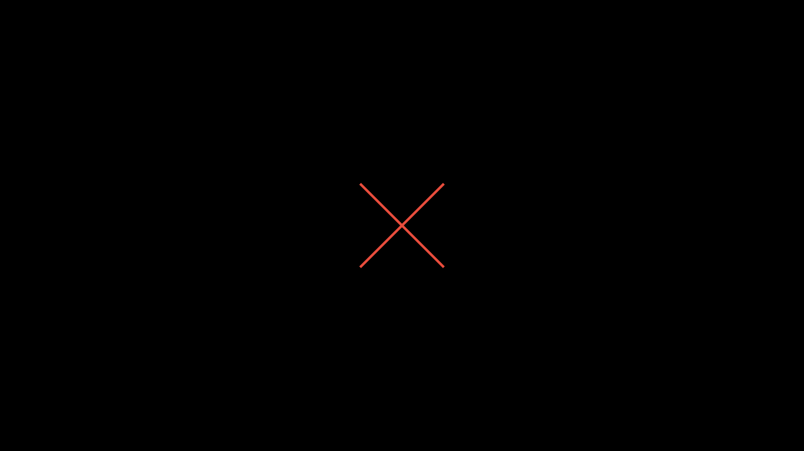
v = VectorMathAnim('_ref_out', verbose=args.verbose)
v.set_background()
c = Cross(cx=960, cy=540, size=200, stroke='#E74C3C', stroke_width=6)
v.add(c)
if args.for_docs:
- class Cross(size=36, cx=960, cy=540, **styling)¶
X-mark shape (two crossing lines).
Text¶
Example: Text

v = VectorMathAnim('_ref_out', verbose=args.verbose)
v.set_background()
t = Text('Hello, World!', x=960, y=540, font_size=72,
fill='#fff', stroke_width=0, text_anchor='middle')
v.add(t)
if args.for_docs:
- class Text(text='', x=960, y=540, font_size=48, text_anchor=None, font_family=None, **styling)¶
SVG
<text>element with animation support.- Parameters:
text (str) – Text content.
x (float) – X position.
y (float) – Y position.
font_size (float) – Font size in pixels.
text_anchor (str) – SVG text-anchor (
'start','middle','end').font_family (str) – Font family name.
Query
- get_text(time=0)¶
Return the current text string.
- get_font_size(time=0)¶
Return the current font size.
- starts_with(prefix, time=0)¶
- ends_with(suffix, time=0)¶
String checks on the current text.
Text animations
- typing(start=0, end=1, change_existence=True)¶
Typewriter effect — reveals the text character by character.
- reveal_by_word(start=0, end=1, change_existence=True, easing=None)¶
Reveal text word by word. Alias:
word_by_word.
- typewrite(start=0, end=1, cursor='|', cursor_blink=0.5)¶
Typewriter with a blinking cursor character.
- untype(start=0, end=1)¶
Reverse typewriter — removes characters one by one.
- scramble(start=0, end=1, chars=None)¶
Scramble text with random characters before settling to the final text.
- set_text(start, end, new_text)¶
Change the text content over the interval.
- highlight(start=0, end=1, color='#FFFF00')¶
Briefly highlight the text with a color flash.
- highlight_substring(substring, color='#FFFF00', start=0, end=None)¶
Highlight occurrences of a substring with a different color.
Example — typewriter effect
t = Text("Hello, World!", x=960, y=540, font_size=64, fill='#fff') t.typing(start=0, end=3) # Reveals over 3 seconds
CountAnimation¶
- class CountAnimation(start_val=0, end_val=100, start=0, end=1, fmt='{:.0f}', easing=smooth, x=960, y=540, font_size=60, **styling)¶
Bases:
TextAnimated counter that interpolates between two numeric values.
- Parameters:
start_val (float) – Starting number.
end_val (float) – Ending number.
start (float) – Animation start time.
end (float) – Animation end time.
fmt (str) – Format string (e.g.
'{:.2f}'or'${:,.0f}').easing – Easing function (default
smooth).
Example
counter = CountAnimation(0, 1000, fmt='${:,.0f}', x=960, y=540, font_size=72, fill='#2ECC71') counter.fadein(start=0, end=0.5) # Counts from $0 to $1,000 over 3 seconds
Integer¶
- class Integer(value=0, x=960, y=540, font_size=48, **styling)¶
Bases:
DecimalNumberLike DecimalNumber but formats as an integer (no decimal places).
ComplexValueTracker¶
- class ComplexValueTracker(value=0 + 0j, creation=0)¶
Like
ValueTrackerbut tracks a complex number (two Reals for real/imaginary parts).- set_value(val, start=0)¶
- animate_value(target, start, end, easing=smooth)¶
- at_time(time)¶
Get, set, or animate the complex value.
Path¶
Example: Path
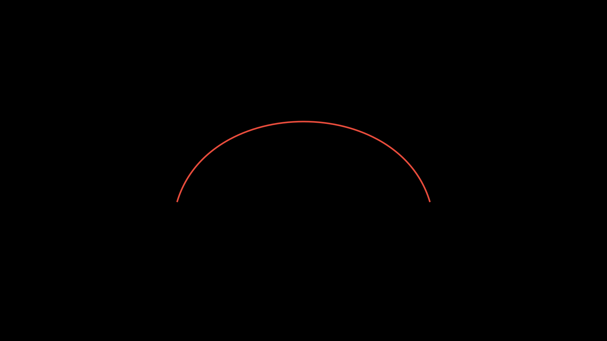
v = VectorMathAnim('_ref_out', verbose=args.verbose)
v.set_background()
d = 'M 560,640 C 660,300 1260,300 1360,640'
p = Path(d, stroke='#E74C3C', stroke_width=5, fill_opacity=0)
v.add(p)
if args.for_docs:
Image¶
Trace¶
- class Trace(point, start=0, end=None, dt=1 / 60, **styling)¶
Follows a
Coorattribute and renders its trajectory as a polyline.- Parameters:
point (Coor) – The coordinate to trace.
start (float) – Start time.
end (float) – End time.
dt (float) – Time step between samples.
- vertices(time)¶
Return the list of
(x, y)vertices traced up to time.
CubicBezier¶
Elbow¶
Fractals & Spirals¶
- class KochSnowflake(cx=960, cy=540, size=400, depth=3, **styling)¶
Bases:
PolygonKoch snowflake fractal polygon. Each recursion depth subdivides edges with triangular bumps, creating the classic fractal boundary.
- Parameters:
cx (float) – Center x.
cy (float) – Center y.
size (float) – Side length of the initial equilateral triangle.
depth (int) – Recursion depth (0 = triangle, 3 is typical).
- class SierpinskiTriangle(cx=960, cy=540, size=500, depth=4, **styling)¶
Bases:
VCollectionSierpinski triangle fractal composed of many small filled triangles.
- Parameters:
cx (float) – Center x.
cy (float) – Center y.
size (float) – Side length of the outer triangle.
depth (int) – Recursion depth (0 = solid triangle, 4–5 is typical).
- class Spiral(cx=960, cy=540, a=0, b=15, turns=5, num_points=500, log_spiral=False, **styling)¶
Bases:
LinesArchimedean (
r = a + b·θ) or logarithmic (r = a·e^{b·θ}) spiral.- Parameters:
a (float) – Initial radius (distance from center at θ=0).
b (float) – Growth rate per radian.
turns (float) – Number of full turns.
num_points (int) – Number of sample points.
log_spiral (bool) – If True, use logarithmic spiral.
Example
# Archimedean spiral s = Spiral(a=0, b=12, turns=6, stroke='#3498DB', stroke_width=2) s.create(start=0, end=3) # Logarithmic spiral ls = Spiral(a=5, b=0.15, turns=4, log_spiral=True, stroke='#E74C3C', stroke_width=2)
SurroundingRectangle¶
- class SurroundingRectangle(target, buff=14, corner_radius=6, follow=True, **styling)¶
Bases:
RoundedRectangleRectangle that surrounds a target object with padding. If
follow=True(default), tracks the target as it moves.- Parameters:
target (VObject) – Object to surround.
buff (float) – Padding around the target.
follow (bool) – Track target position dynamically.
Example
SurroundingRectangle — highlight an object with a border.
from vectormation.objects import *
text = Text('Important', font_size=60)
text.center_to_pos()
sr = SurroundingRectangle(text, buff=15, stroke='#FF6B6B', rx=8, ry=8)
sr.create(start=0, end=1)
SurroundingCircle¶
BackgroundRectangle¶
- class BackgroundRectangle(target, buff=14, z=-1, **styling)¶
Bases:
RectangleSemi-transparent rectangle behind a target object (useful for text backgrounds). Default fill is black at 75% opacity.
- Parameters:
target (VObject) – Object to put background behind.
buff (float) – Padding around the target.
ScreenRectangle¶
ValueTracker¶
- class ValueTracker(value=0, creation=0)¶
Convenience wrapper around a time-varying Real attribute. Use to drive reactive animations (e.g. link a label’s position to a value).
- Parameters:
value (float) – Initial value.
- set_value(val, start=0)¶
Set the value from start onward.
- animate_value(target, start, end, easing=smooth)¶
Animate to a new value over
[start, end].
- at_time(time)¶
Return the value at a given time.
DecimalNumber¶
- class DecimalNumber(value=0, fmt='{:.2f}', x=960, y=540, font_size=48, **styling)¶
Bases:
TextText that dynamically displays a numeric value, updating each frame.
- Parameters:
value – Initial value, or a
Real/ValueTrackerto track.fmt (str) – Format string for display.
Paragraph¶
- class Paragraph(*lines, x=960, y=540, font_size=36, alignment='left', line_spacing=1.4, **styling)¶
Multi-line text with configurable alignment and line spacing.
- Parameters:
lines – Text strings, one per line.
alignment (str) –
'left','center', or'right'.line_spacing (float) – Vertical spacing multiplier.
p = Paragraph('First line of text.', 'Second line here.', 'And a third.', alignment='center', font_size=32)
BulletedList¶
- class BulletedList(*items, x=200, y=200, font_size=36, bullet='•', indent=40, line_spacing=1.6, **styling)¶
List of items with bullet characters.
- Parameters:
items – Text strings for each list item.
bullet (str) – Bullet character (default
'•').indent (float) – Horizontal indent for the text after the bullet.
bl = BulletedList('First point', 'Second point', 'Third point')
NumberedList¶
- class NumberedList(*items, x=200, y=200, font_size=36, indent=50, line_spacing=1.6, start_number=1, **styling)¶
List of items with numeric labels (1. 2. 3. …).
- Parameters:
items – Text strings for each list item.
indent (float) – Horizontal indent for text after the number.
start_number (int) – First number in the sequence.
nl = NumberedList('Install the package', 'Import the module', 'Create your animation')